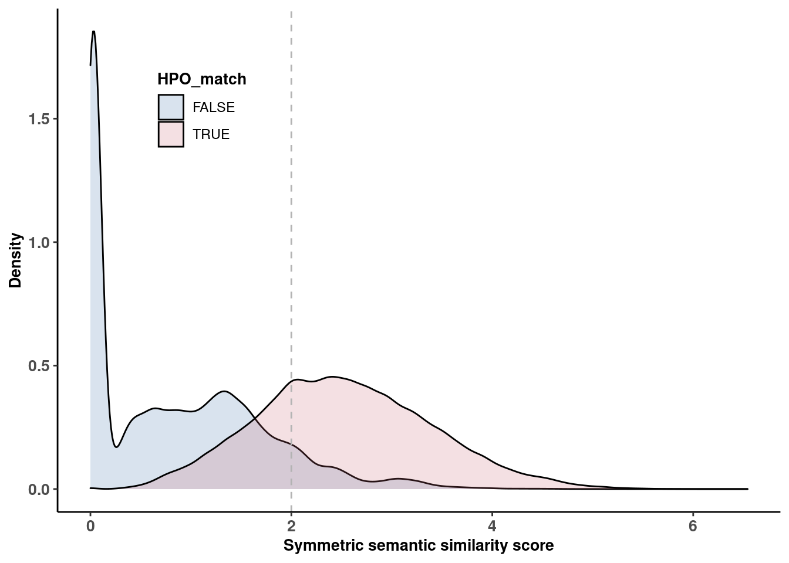
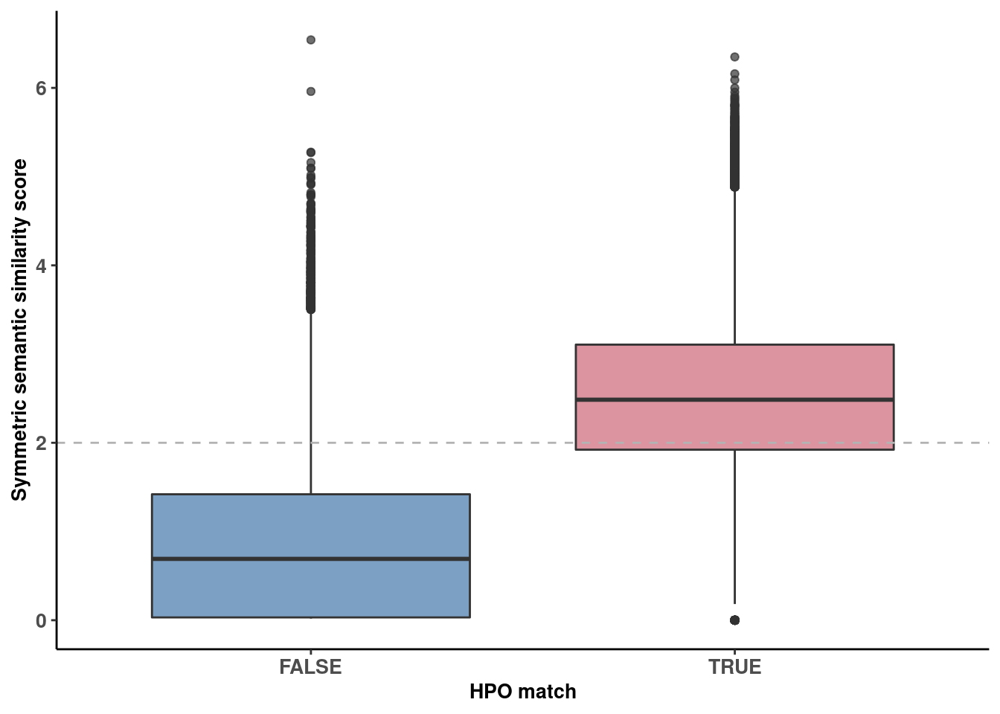

source(snakemake@input$config)
# READ ANNOTATION
# sa <- fread('/s/project/mitoMultiOmics/multiOMICs_integration/raw_data/proteomics_annotation.tsv')
sa <- fread(snakemake@input$sa)
sa <- sa[USE_FOR_PROTEOMICS_PAPER == T]
# Read HPO match
# hpo_match <- fread('/s/project/mitoMultiOmics/multiOMICs_integration/processed_data/HPO/Patients_HPO_Gene_mapping.tsv')
hpo_match <- fread(snakemake@input$hpo_match)
# Read Semantic similarity scores
# SSscores <- fread('/s/project/mitoMultiOmics/multiOMICs_integration/processed_data/HPO/Patient_Gene_semantic_similariy.tsv')
SSscores <- fread(snakemake@input$semantic_similariy)
phenotype <- merge(hpo_match, SSscores, by = c("SAMPLE_ID", "geneID"), all = T )
phenotype[ is.na(HPO_match ) , HPO_match := F]
phenotype[ is.na(Semantic_sim ) , Semantic_sim := 0]
# write_tsv(phenotype, '/s/project/mitoMultiOmics/multiOMICs_integration/processed_data/HPO/Patients_phenotype_data.tsv')
write_tsv(phenotype, snakemake@output$phenotype_data)
ggplot(phenotype, aes(Semantic_sim, fill = HPO_match))+
geom_density(alpha= 0.2)+
theme_classic()+
geom_vline(xintercept =2, color = "grey70", linetype = "dashed")+
xlab("Symmetric semantic similarity score") +
ylab("Density")+
scale_fill_ptol()+
theme(plot.title = element_text(hjust = 0.5),
axis.title.x= element_text( size=10, margin = NULL,face="bold"),
axis.title.y= element_text( size=10, margin = NULL,face="bold"),
axis.text.x = element_text(face="bold", size=10),
axis.text.y = element_text(face="bold", size=10),
legend.title = element_text(face="bold", size=10),
legend.position = c(0.2, 0.8))

ggplot(phenotype, aes(HPO_match ,Semantic_sim, fill = HPO_match))+
geom_boxplot(alpha= 0.7)+
theme_classic()+
geom_hline(yintercept =2, color = "grey70", linetype = "dashed")+
scale_fill_ptol()+
ylab("Symmetric semantic similarity score") +
xlab("HPO match")+
theme(plot.title = element_text(hjust = 0.5),
axis.title.x= element_text( size=10, margin = NULL,face="bold"),
axis.title.y= element_text( size=10, margin = NULL,face="bold"),
axis.text.x = element_text(face="bold", size=10),
axis.text.y = element_text(face="bold", size=10),
legend.title = element_blank(),
legend.position = "none")

IyctLS0KIycgdGl0bGU6IFNlbWFudGljIHNpbWlsYXJpdHkgdnMgSFBPIG1hdGNoCiMnIGF1dGhvcjogc21pcm5vdmQKIycgd2I6CiMnICBpbnB1dDoKIycgIC0gY29uZmlnOiAnc3JjL2NvbmZpZy5SJwojJyAgLSBzYTogJ2BzbSBjb25maWdbIkFOTk9UQVRJT04iXWAnCiMnICAtIGhwb19tYXRjaDogJ2BzbSBjb25maWdbIlBST0NfREFUQSJdICsgIi9IUE8vUGF0aWVudHNfSFBPX0dlbmVfbWFwcGluZy50c3YiYCcKIycgIC0gc2VtYW50aWNfc2ltaWxhcml5OiAnYHNtIGNvbmZpZ1siUFJPQ19EQVRBIl0gKyAiL0hQTy9QYXRpZW50X0dlbmVfc2VtYW50aWNfc2ltaWxhcml5LnRzdiJgJwojJyAgb3V0cHV0OgojJyAgLSBwaGVub3R5cGVfZGF0YTogJ2BzbSBjb25maWdbIlBST0NfREFUQSJdICsgIi9IUE8vUGF0aWVudHNfcGhlbm90eXBlX2RhdGEudHN2ImAnCiMnIG91dHB1dDoKIycgICBodG1sX2RvY3VtZW50OgojJyAgICBjb2RlX2ZvbGRpbmc6IGhpZGUKIycgICAgY29kZV9kb3dubG9hZDogVFJVRQojJy0tLQoKc291cmNlKHNuYWtlbWFrZUBpbnB1dCRjb25maWcpCgoKIyBSRUFEIEFOTk9UQVRJT04KIyBzYSA8LSBmcmVhZCgnL3MvcHJvamVjdC9taXRvTXVsdGlPbWljcy9tdWx0aU9NSUNzX2ludGVncmF0aW9uL3Jhd19kYXRhL3Byb3Rlb21pY3NfYW5ub3RhdGlvbi50c3YnKQpzYSA8LSBmcmVhZChzbmFrZW1ha2VAaW5wdXQkc2EpCnNhIDwtIHNhW1VTRV9GT1JfUFJPVEVPTUlDU19QQVBFUiA9PSBUXQoKIyBSZWFkIEhQTyBtYXRjaAojIGhwb19tYXRjaCA8LSBmcmVhZCgnL3MvcHJvamVjdC9taXRvTXVsdGlPbWljcy9tdWx0aU9NSUNzX2ludGVncmF0aW9uL3Byb2Nlc3NlZF9kYXRhL0hQTy9QYXRpZW50c19IUE9fR2VuZV9tYXBwaW5nLnRzdicpCmhwb19tYXRjaCA8LSBmcmVhZChzbmFrZW1ha2VAaW5wdXQkaHBvX21hdGNoKQoKCiMgUmVhZCBTZW1hbnRpYyBzaW1pbGFyaXR5IHNjb3JlcwojIFNTc2NvcmVzIDwtIGZyZWFkKCcvcy9wcm9qZWN0L21pdG9NdWx0aU9taWNzL211bHRpT01JQ3NfaW50ZWdyYXRpb24vcHJvY2Vzc2VkX2RhdGEvSFBPL1BhdGllbnRfR2VuZV9zZW1hbnRpY19zaW1pbGFyaXkudHN2JykKU1NzY29yZXMgPC0gZnJlYWQoc25ha2VtYWtlQGlucHV0JHNlbWFudGljX3NpbWlsYXJpeSkKCgpwaGVub3R5cGUgPC0gbWVyZ2UoaHBvX21hdGNoLCBTU3Njb3JlcywgYnkgPSBjKCJTQU1QTEVfSUQiLCAiZ2VuZUlEIiksIGFsbCA9IFQgKQpwaGVub3R5cGVbIGlzLm5hKEhQT19tYXRjaCApICwgSFBPX21hdGNoIDo9IEZdCnBoZW5vdHlwZVsgaXMubmEoU2VtYW50aWNfc2ltICkgLCBTZW1hbnRpY19zaW0gOj0gMF0KCgojIHdyaXRlX3RzdihwaGVub3R5cGUsICAnL3MvcHJvamVjdC9taXRvTXVsdGlPbWljcy9tdWx0aU9NSUNzX2ludGVncmF0aW9uL3Byb2Nlc3NlZF9kYXRhL0hQTy9QYXRpZW50c19waGVub3R5cGVfZGF0YS50c3YnKQp3cml0ZV90c3YocGhlbm90eXBlLCAgc25ha2VtYWtlQG91dHB1dCRwaGVub3R5cGVfZGF0YSkKCgpnZ3Bsb3QocGhlbm90eXBlLCBhZXMoU2VtYW50aWNfc2ltLCAgZmlsbCA9IEhQT19tYXRjaCkpKwogIGdlb21fZGVuc2l0eShhbHBoYT0gMC4yKSsKICB0aGVtZV9jbGFzc2ljKCkrCiAgZ2VvbV92bGluZSh4aW50ZXJjZXB0ID0yLCBjb2xvciA9ICJncmV5NzAiLCBsaW5ldHlwZSA9ICJkYXNoZWQiKSsKICB4bGFiKCJTeW1tZXRyaWMgc2VtYW50aWMgc2ltaWxhcml0eSBzY29yZSIpICsgCiAgeWxhYigiRGVuc2l0eSIpKwogIHNjYWxlX2ZpbGxfcHRvbCgpKwogIHRoZW1lKHBsb3QudGl0bGUgPSBlbGVtZW50X3RleHQoaGp1c3QgPSAwLjUpLAogICAgICAgIGF4aXMudGl0bGUueD0gZWxlbWVudF90ZXh0KCBzaXplPTEwLCBtYXJnaW4gPSBOVUxMLGZhY2U9ImJvbGQiKSwKICAgICAgICBheGlzLnRpdGxlLnk9IGVsZW1lbnRfdGV4dCggc2l6ZT0xMCwgbWFyZ2luID0gTlVMTCxmYWNlPSJib2xkIiksCiAgICAgICAgYXhpcy50ZXh0LnggPSBlbGVtZW50X3RleHQoZmFjZT0iYm9sZCIsICBzaXplPTEwKSwKICAgICAgICBheGlzLnRleHQueSA9IGVsZW1lbnRfdGV4dChmYWNlPSJib2xkIiwgIHNpemU9MTApLAogICAgICAgIGxlZ2VuZC50aXRsZSA9IGVsZW1lbnRfdGV4dChmYWNlPSJib2xkIiwgIHNpemU9MTApLAogICAgICAgIGxlZ2VuZC5wb3NpdGlvbiA9IGMoMC4yLCAwLjgpKQoKCmdncGxvdChwaGVub3R5cGUsIGFlcyhIUE9fbWF0Y2ggLFNlbWFudGljX3NpbSwgIGZpbGwgPSBIUE9fbWF0Y2gpKSsKICBnZW9tX2JveHBsb3QoYWxwaGE9IDAuNykrIAogIHRoZW1lX2NsYXNzaWMoKSsKICBnZW9tX2hsaW5lKHlpbnRlcmNlcHQgPTIsIGNvbG9yID0gImdyZXk3MCIsIGxpbmV0eXBlID0gImRhc2hlZCIpKwogIHNjYWxlX2ZpbGxfcHRvbCgpKwogIHlsYWIoIlN5bW1ldHJpYyBzZW1hbnRpYyBzaW1pbGFyaXR5IHNjb3JlIikgKyAKICB4bGFiKCJIUE8gbWF0Y2giKSsKICB0aGVtZShwbG90LnRpdGxlID0gZWxlbWVudF90ZXh0KGhqdXN0ID0gMC41KSwKICAgICAgICBheGlzLnRpdGxlLng9IGVsZW1lbnRfdGV4dCggc2l6ZT0xMCwgbWFyZ2luID0gTlVMTCxmYWNlPSJib2xkIiksCiAgICAgICAgYXhpcy50aXRsZS55PSBlbGVtZW50X3RleHQoIHNpemU9MTAsIG1hcmdpbiA9IE5VTEwsZmFjZT0iYm9sZCIpLAogICAgICAgIGF4aXMudGV4dC54ID0gZWxlbWVudF90ZXh0KGZhY2U9ImJvbGQiLCAgc2l6ZT0xMCksCiAgICAgICAgYXhpcy50ZXh0LnkgPSBlbGVtZW50X3RleHQoZmFjZT0iYm9sZCIsICBzaXplPTEwKSwKICAgICAgICBsZWdlbmQudGl0bGUgPSBlbGVtZW50X2JsYW5rKCksCiAgICAgICAgbGVnZW5kLnBvc2l0aW9uID0gIm5vbmUiKQoK